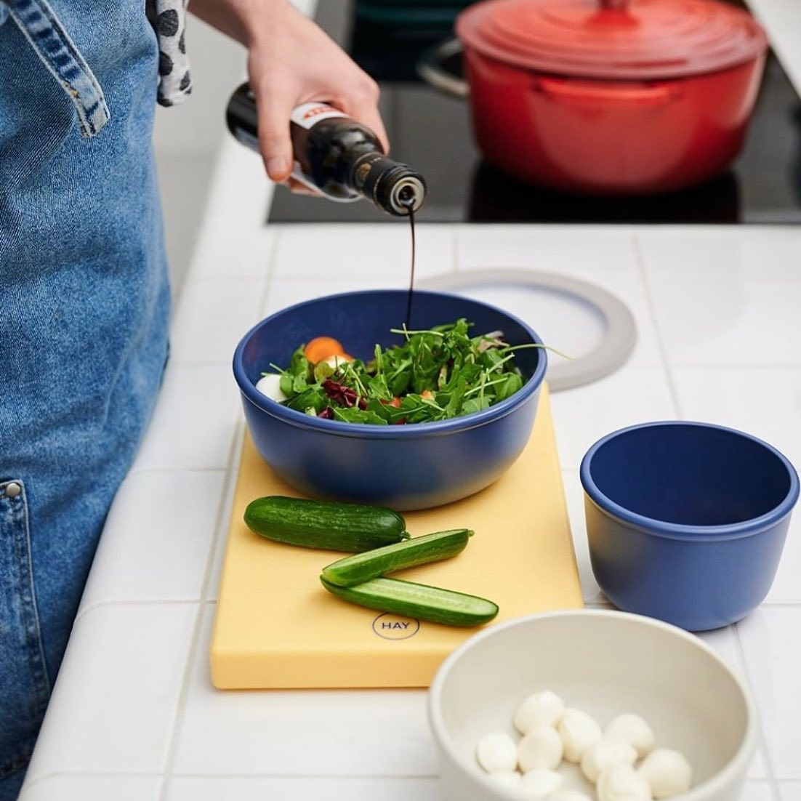

Zelenina podľa @mepal.cz — Normy Jedál
DEN ZEMĚ a náš 1. příspěvek na Instagramu 💙 Hurá, jsme rádi že jsme tady a doufáme, že tu společně načerpáme spoustu inspirace 😍
A když už máme den země, co si udělat na večeři třeba nějaký lehký salátek? 🌱 V míse Cirqula ho můžete uchovat v lednici i na další den 👌🏼